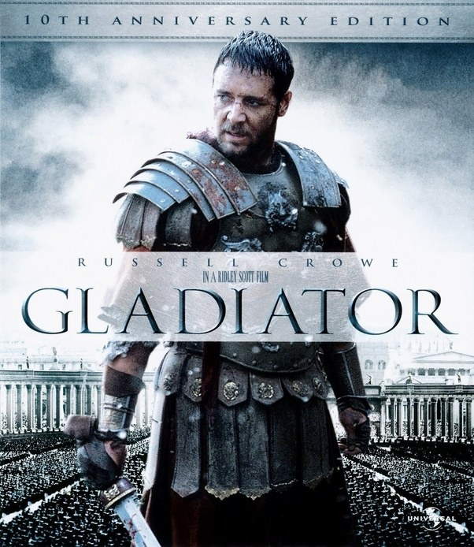

Title: Lion Heart
Genre: Fightings, dramma, history.
Release date: 2012
Lt. John Dunbar, exiled to a remote western Civil War outpost, befriends wolves and Indians, making him an intolerable aberration in the military.
Director: Steven Spielberg Stars: Liam Neeson, Ralph Fiennes, Ben Kingsley, Caroline Goodall

Title: Gladiator
Genre: Fightings, dramma, romantics
Release date: 2015
When a Roman General is betrayed, and his family murdered by an emperor's corrupt son, he comes to Rome as a gladiator to seek revenge.
Director: Joe Armstrong Stars: Liam Neeson, Jonny Depp
Title:Black Eagle
Genre: dramma, history
Release date:2014
Lt. This epic historical drama chronicles the life and times of Muhammad and serves as an introduction to early Islamic history. (177 mins.)
Director: Mona Rosy Stars: Ralph Fiennes, John Costelgy, Caroline Goodall

Title:Hachiko
Genre: drama
Release date:2009
Hachi: A Dog's Tale is a 2009 British-American drama film. Based on the true story of a faithful Akita Inu, the titular Hachikō.The subject is a remake of the 1987 Japanese film.
Director: Lindsey and Kaneto Shindo Stars: MStephen P. and stars Richard Gere, Joan Allen and Sarah Roemer.
Home